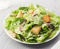

Chicken Caesar Salad

Description
A Caesar salad (also spelled Cesar, César and Cesare) is a green salad of romaine lettuce
and croutons dressed with lemon juice (or lime juice), olive oil, egg,
Worcestershire sauce, anchovies, garlic, Dijon mustard, Parmesan cheese, and black pepper.
In its original form, this salad was prepared and served tableside.
Ingredients
- 1 large or 2 small heads of romaine lettuce
- Parmesan cheese, shredded or shaved
-
Crisp croutons, homemade can be made several days ahead.
The recipe below makes enough for 2 salads.
- Caesar salad dressing
Recipe
-
Rinse, dry and chop or tear the romaine into bite-sized pieces. Place in a large serving bowl
and sprinkle generously with shredded parmesan cheese and cooled croutons.
Drizzle with caesar dressing and toss gently until lettuce is evenly coated.